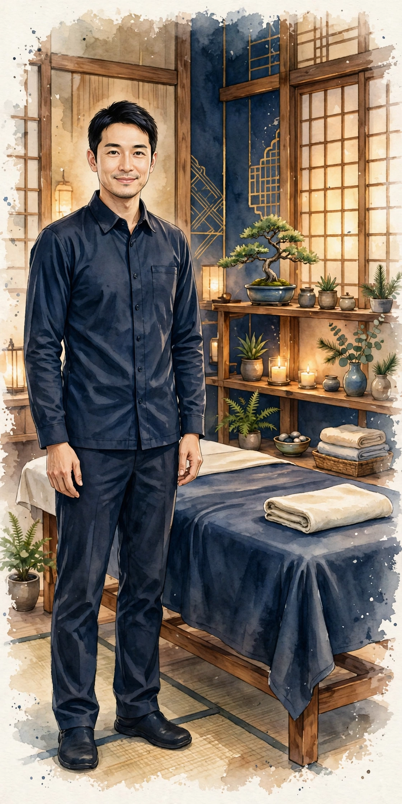

Standard Course
90 min
15,000 JPY (tax incl.)
Our basic course, recommended for first-time guests. Oil treatment matched to your breathing cares for the whole body in balance.
Doyama-cho, Umeda, Osaka | Tantra massage, by appointment only
Oil treatments drawing on breathing, meditation and qigong, provided by a nationally licensed therapist with 30 years of experience.
Treatments are for relaxation and are not medical care.


Tantra is an ancient Indian approach to harmony of body and mind. At our salon we focus on breathing, meditation and the flow of energy, combining them with the yin-yang perspective of Oriental medicine and qigong to offer our own style of healing.
Oil treatment matched to slow, deep breathing gradually loosens the body and mind tightened by everyday stress. During your session, enjoy a meditative time in a quiet space, turning your attention inward.
Your therapist is Tatehito, a nationally licensed acupuncturist with 30 years of experience. Careful, reliable technique grounded in Oriental medicine is the foundation of every session.
Sessions are held in a private room inside the rental salon L'OM OSAKA in Doyama-cho, Umeda, strictly by appointment. You will not encounter other guests.
Before your session we ask about your condition and wishes, and adjust the treatment to how you feel that day. Please feel free to raise anything on your mind.
All course prices include consultation and shower time. There are no charges beyond the listed price (for outcalls, only the outcall fee applies).
From booking to farewell, every course includes consultation and shower time.
Message us on LINE with your preferred date, time and course. We will check availability and reply.
On arrival, we ask about your condition, concerns and preferred pressure.
Refresh with a shower before your session and change into the wear we provide.
A full-body treatment of oil work matched to your breathing, with techniques incorporating qigong.
Afterwards, rinse off the oil in the shower and take quiet time to return to everyday life.
We share notes on your condition and self-care tips, then settle the bill before you leave.

A nationally licensed acupuncturist with 30 years of experience. Through long years working in Oriental medicine and manual therapy, he encountered the tantra approach of breathing, meditation and qigong.
At YinYang-Harmony, he values the Oriental-medicine perspective of yin-yang harmony and tailors each session to the individual. He hopes to offer you time away from everyday tension, quietly facing yourself.
We introduce the history and ideas of tantra carefully, from academic and cultural perspectives — from answering first-timers' questions to the basics of breathing, meditation and qigong. These articles form the foundation of our salon's approach.
What we value is not sensational testimonials, but the perspective of “harmony of mind and body” handed down over a long time. Choose a theme from the index below; each article can be read on its own. Themes that are hard to convey in text alone are also explained in manga sections.

Ganesha — Symbol of Beginnings
The elephant-headed Ganesha has long been beloved in India. In the Hindu tradition he is spoken of as a presence honored at the start of things, removing obstacles and supporting wisdom and learning — which is why his image is often placed where something new begins.
We placed this illustration at the entrance to our column tracing the history of tantra and yoga. The lotus, the mandala and the peacefully closed eyes echo the kind of time we value: unhurried, returning to your own rhythm.
* This is an original illustration drawn for this site. Ganesha is depicted with respect as an object of faith. Our salon is a relaxation salon unaffiliated with any religion, and we do not ask guests to worship or believe.
This column is reading material introducing history, culture and traditional ideas. Including the manga sections, it does not aim to recruit for any religion, nor does it guarantee medical effects. Uncertain origins and legends are presented with phrasing such as “it is said that…”. The manga characters are original creations.
Yes. Our tantra massage is a relaxation for harmony of body and mind, drawing on breathing, meditation and qigong. We consult carefully before your session and explain everything before we begin, so first-time guests can visit with confidence.
No. We are a wholesome healing salon and do not provide adult services. Please book with this understanding, as we cannot accommodate such requests.
Bookings are made via LINE. Please send your preferred date and time, course, and your name. Hours are 10:00–20:00, by appointment only, with irregular holidays. Same-day bookings depend on availability, so early contact is recommended.
Yes, we can visit your home or hotel. Outcall is free near Umeda; other areas incur actual transport costs plus an outcall fee from ¥3,000. Please discuss the place and time on LINE.
If you have a fever or feel unwell, are pregnant, or have skin inflammation, we may ask you to refrain or adjust the treatment. Our sessions are not medical care, so if you are under treatment for an illness, please consult your doctor beforehand and let us know at consultation.
If your plans change, please let us know on LINE as early as possible. As we are fully appointment-based, last-minute cancellations affect other guests. Thank you for your cooperation.
| Name | YinYang-Harmony |
|---|---|
| Address | 16-1 Doyama-cho, Kita-ku, Osaka 530-0027, Japan City Yale Higashi-Umeda II, Room 405 Inside rental salon “L'OM OSAKA” |
| Hours | 10:00–20:00 (by appointment only / irregular holidays) |
| Book Now | Via LINE |
| Outcall | Available to homes and hotels |
You can also check the exact location on Google Maps. After your booking is confirmed, we will send guidance for the day via LINE.
On the official YinYang-Harmony blog (WordPress), we post a new reading piece every day on the culture and history of tantra, and on breathing and meditation. Together with the column on this site, we hope it accompanies your learning between sessions and your quiet moments.
Read the official blog (external site) ↗This link opens the external WordPress site in a new tab.
A corner introducing newly published books and new aroma products chosen along the salon's themes of breathing, meditation and scent (updated October 30, 2026).
A brain physiologist known for serotonin research unravels the true nature of vague malaise through the relationship between the brain substance serotonin and breathing. A chance to reread, from the scientific side, the "breathing" that underlies our treatments.
View on Amazon ↗A systematic compilation of breathing-method practice; a Kindle edition followed in June 2026. Learn, from a practitioner's viewpoint, a theme that overlaps with our treatments, which draw on qigong ideas.
View the official site ↗
Hakka (Japanese mint) oil from a maker in Kitami, Hokkaido, a region known for hakka production. A natural hakka oil also usable as a food additive; suggested uses include scenting a handkerchief or adding a few drops to bath water.
View on Amazon ↗Hakka oil from Kenei Pharmaceutical, a maker of medicines and hygiene products. With its clean mint scent, it is used to enjoy fragrance — scenting a room or a handkerchief.
View on Amazon ↗Hakka oil from Peppermint Shokai. Noted for its refreshing mint scent, it is used as an aroma oil for enjoying fragrance.
View on Amazon ↗About advertising: the Amazon links in this corner include affiliate links (ads) under the Amazon Associates Program. As an Amazon Associate, YinYang-Harmony earns from qualifying purchases. Prices and stock change, so please check the linked page before purchasing.
Bookings for YinYang-Harmony are accepted via our official LINE account. Sending the following details makes everything smoother.
On the official site you can also see the latest salon news and columns (with links to our note articles). You can add our LINE account as a friend from there, too.
SISTER SALON — UMEDA
Our sister salon Stella Polaris offers oil massage and beauty bodywork for women in Umeda. Drawing on Oriental-medicine knowledge, it supports both beauty and wellbeing.